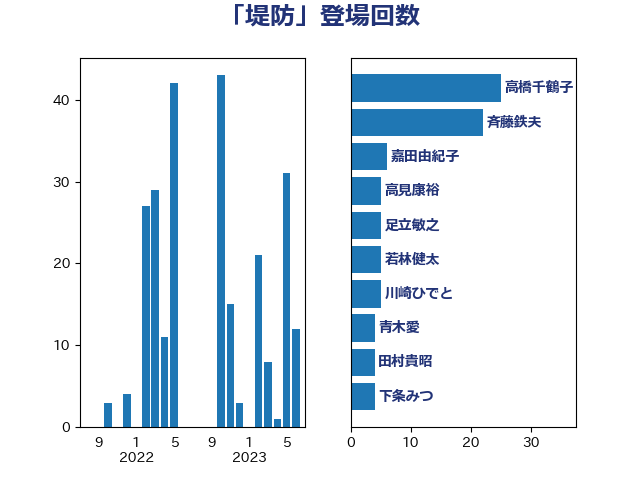

単語「堤防」

| 高橋千鶴子 | 日本共産党 | 25 回 |
| 斉藤鉄夫 | 公明党 | 22 回 |
| 嘉田由紀子 | 無所属 | 6 回 |
| 高見康裕 | 自由民主党 | 5 回 |
| 足立敏之 | 自由民主党 | 5 回 |
| 若林健太 | 自由民主党 | 5 回 |
| 川崎ひでと | 自由民主党 | 5 回 |
| 青木愛 | 立憲民主党 | 4 回 |
| 田村貴昭 | 日本共産党 | 4 回 |
| 下条みつ | 立憲民主党 | 4 回 |
| 高木陽介 | 公明党 | 3 回 |
| 長友慎治 | 国民民主党 | 3 回 |
| 篠原孝 | 立憲民主党 | 3 回 |
| 田所嘉徳 | 自由民主党 | 3 回 |
| 片山さつき | 自由民主党 | 3 回 |
| 池下卓 | 日本維新の会 | 3 回 |
| 櫛渕万里 | れいわ新選組 | 3 回 |
| 小野田紀美 | 自由民主党 | 3 回 |
| 須藤元気 | 無所属 | 2 回 |
| 美延映夫 | 日本維新の会 | 2 回 |
| 石原正敬 | 自由民主党 | 2 回 |
| 津島淳 | 自由民主党 | 2 回 |
| 永井学 | 自由民主党 | 2 回 |
| 塩田博昭 | 公明党 | 2 回 |
| 吉田宣弘 | 公明党 | 2 回 |
| 下野六太 | 公明党 | 2 回 |
| 野田国義 | 立憲民主党 | 1 回 |
| 芳賀道也 | 国民民主党 | 1 回 |
| 竹内真二 | 公明党 | 1 回 |
| 穀田恵二 | 日本共産党 | 1 回 |
| 田中健 | 国民民主党 | 1 回 |
| 猪口邦子 | 自由民主党 | 1 回 |
| 漆間譲司 | 日本維新の会 | 1 回 |
| 泉田裕彦 | 自由民主党 | 1 回 |
| 松村祥史 | 自由民主党 | 1 回 |
| 朝日健太郎 | 自由民主党 | 1 回 |
| 山田勝彦 | 立憲民主党 | 1 回 |
| 尾崎正直 | 自由民主党 | 1 回 |
| 奥下剛光 | 日本維新の会 | 1 回 |
| 堤かなめ | 立憲民主党 | 1 回 |
| 国定勇人 | 自由民主党 | 1 回 |
| 北神圭朗 | 無所属 | 1 回 |
| 冨樫博之 | 自由民主党 | 1 回 |
| 仁比聡平 | 日本共産党 | 1 回 |
| 井上哲士 | 日本共産党 | 1 回 |
| 中野英幸 | 自由民主党 | 1 回 |